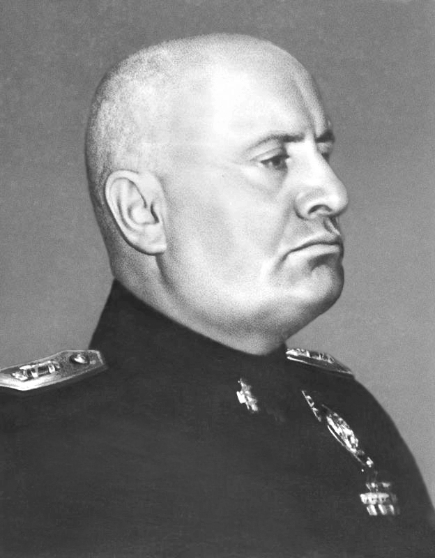
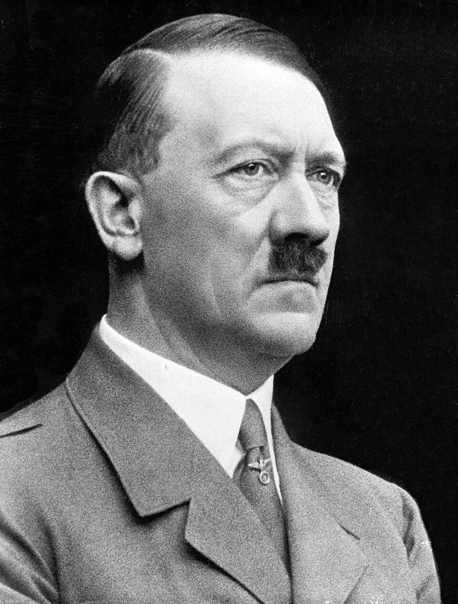
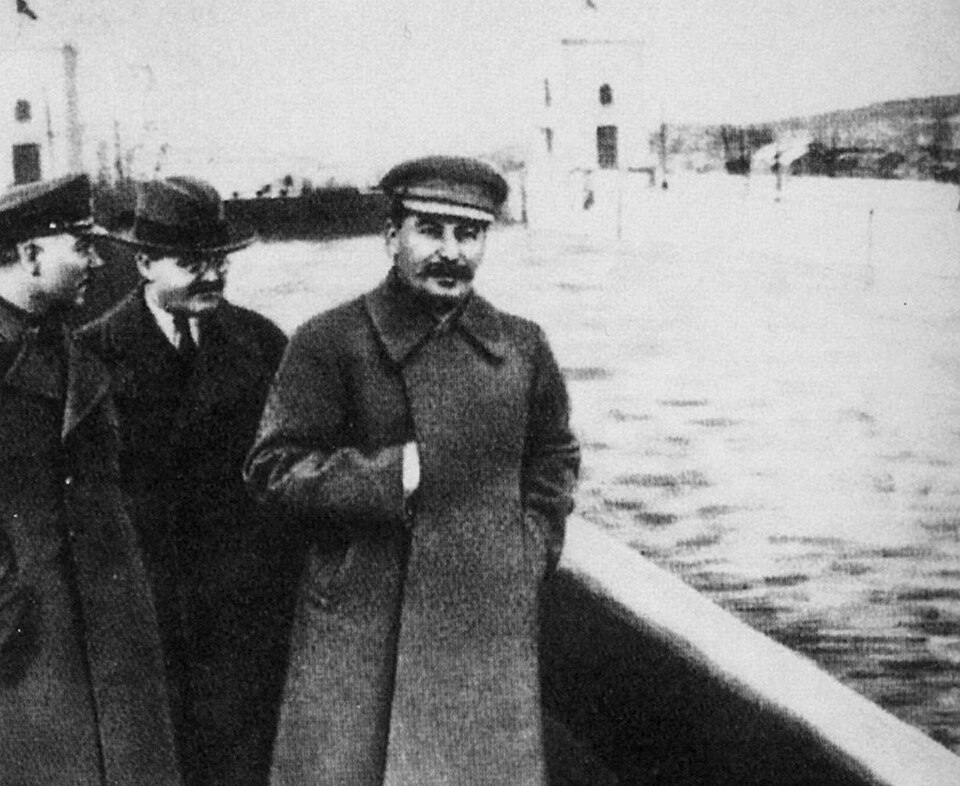

1984 × História real
O QUE ORWELL VIU
George Orwell viveu entre 1903 e 1950. Ele viu o stalinismo, o nazismo e a Segunda Guerra — e, com tudo isso, escreveu 1984. Esta apresentação mostra também o que vem antes do ditador: ninguém nasce autoritário.
«Cada linha de trabalho sério que escrevi desde 1936 foi escrita, direta ou indiretamente, contra o totalitarismo.»George Orwell, “Por Que Escrevo” (1946)
Use os botões nos cantos inferiores da tela para avançar e voltar.

O autor
Um escritor que viu o totalitarismo de perto
- 1922–1927: foi policial colonial na Birmânia (atual Mianmar) e viu como um império trata os dominados.
- 1936–1937: lutou na Guerra Civil Espanhola. Aliados foram presos e a história foi reescrita diante dele.
- 1941–1943: trabalhou no Ministério da Informação britânico, que fazia propaganda de guerra.
- 1946–1948: escreveu 1984, publicado em 1949, poucos meses antes de morrer.
«Vi a história ser reescrita não uma, mas várias vezes.»Orwell, “Repensando a Guerra da Espanha” (1942)

O mundo do livro
Três blocos em guerra para sempre

Em 1984, o mundo está dividido em três superestados: Oceânia, Eurásia e Lestásia. Eles vivem em guerra permanente — não para vencer, mas para manter a população com medo e ocupada.
Orwell se inspirou na Conferência de Teerã (1943), em que os aliados começaram a dividir o mundo em zonas de influência. Também pensou no Pacto Molotov-Ribbentrop (1939), quando inimigos viraram aliados da noite para o dia.
«O livro pretende discutir as implicações de dividir o mundo em zonas de influência.»Orwell, carta de 1948
Passo 2 de 7 · O rosto
O salvador não aparece: ele é fabricado
Culto à personalidade não é admiração espontânea. É trabalho diário de repetição, enquadramento e exagero, feito por uma máquina de propaganda.
- Um título sagrado: Duce, Führer, “Pai dos Povos”, “grande timoneiro”.
- O rosto em todo lugar: escolas, fábricas, jornais, cinema e desfiles.
- Rádio e cinema: a voz do líder entra dentro de casa.
- O mito de origem: o homem que sofreu pelo povo e “veio de baixo”.
- Linguagem religiosa: salvador, guia infalível, pai. Duvidar vira traição.
- Onipresença e distância: o líder nunca é visto de perto, só como imagem.



Retratos oficiais reproduzidos aos milhares. Wikimedia Commons.
O Grande Irmão funciona igual — e Orwell dá um passo além: ele nunca aparece em pessoa. O rosto basta. O poder não precisa de um homem, precisa de uma imagem.
Fonte: Kruschev, Relatório Secreto (1956), sobre como o culto a Stalin cresceu por métodos artificiais.
Caso 3 · União Soviética
Stalin: o poder que se acumula cargo por cargo
- 1917Participa da Revolução de Outubro. Torna-se comissário das Nacionalidades.
- 1922Assume o cargo burocrático de secretário-geral — quem decide quem ocupa cada posto no partido.
- 1924Lênin morre. O testamento, que criticava Stalin, é abafado pela direção do partido.
- 1927–29Vence a disputa interna, expulsa Trotsky e depois o exila. Trotsky será assassinado no México em 1940.
- 1928–33Coletivização forçada e “deskulakização”: milhões deportados; fome em massa, com o Holodomor na Ucrânia.
- 1934O assassinato de Kirov gera um decreto que acelera prisões, julgamentos e execuções.
- 1936–38Grandes processos e Grande Terror: antigos líderes confessam crimes inventados; ordens da NKVD fixam cotas de prisão e morte.
- 1939Assina o Pacto com Hitler e divide o leste da Europa.
O Grande Irmão não precisa vencer eleições: controla quem conta os votos, quem escreve o jornal e quem decide o que aconteceu.
Stalin não deu um golpe. Como secretário-geral, decidiu quem ocupava cada cargo — e, em poucos anos, o partido inteiro dependia dele.
Aprofunde: ·
Livro ↔ História
O Grande Irmão se parece com Stalin
«O Grande Irmão está vigiando você.»1984, parte 1, capítulo 1
No livro, o Grande Irmão é o líder que tudo vê e que nunca erra. Na URSS, Stalin construiu uma imagem parecida: retratos em prédios, jornais e desfiles, sempre como o “guia infalível” do povo.
Um rosto onipresente, protegido por um culto ao líder.
Stalin, Hitler e Mussolini usaram retratos, rádio e comícios para criar líderes “acima de todos”.
Fontes: propaganda stalinista dos anos 1930; Constituição soviética de 1936.
Livro ↔ História
Winston muda o passado. A URSS fazia igual.
«Quem controla o passado controla o futuro; quem controla o presente controla o passado.»1984, parte 1, capítulo 3
O trabalho de Winston é reescrever jornais e fotos para que o Partido pareça sempre certo. Na URSS, censores faziam o mesmo com fotos e livros: inimigos do regime eram apagados das imagens.


Fonte: David King, O Comissário Desaparece (1997). Imagens de domínio público.
Livro ↔ História
O inimigo de hoje era o aliado de ontem
Em 1984, Oceânia muda de inimigo no meio de um discurso, e ninguém pode contestar. O passado é reescrito para combinar com a nova versão.
Isso aconteceu de verdade em 23 de agosto de 1939: Alemanha nazista e União Soviética assinaram o Pacto Molotov-Ribbentrop e dividiram parte da Europa. Eram inimigos declarados. Viraram aliados da noite para o dia.
Em 22 de junho de 1941, a Alemanha invadiu a URSS. A propaganda mudou outra vez — e a população teve de aceitar a nova versão.